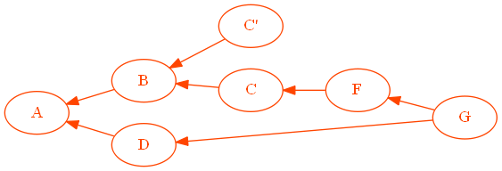
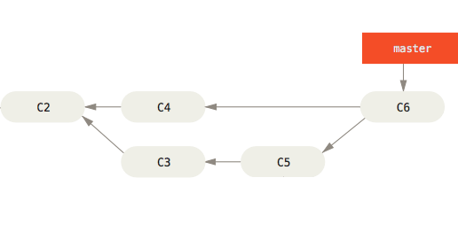
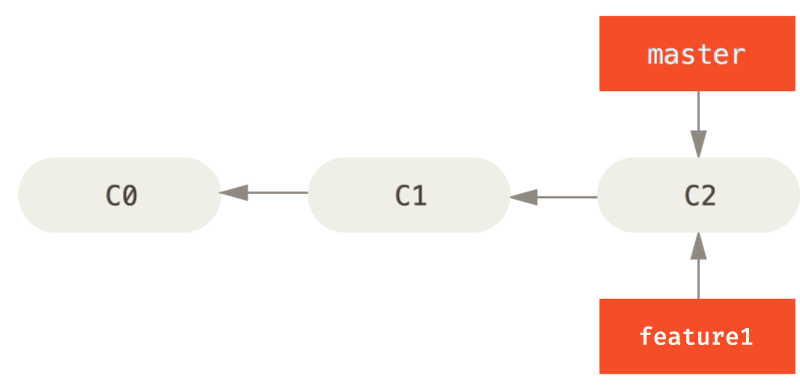

Advanced Git
Understanding the graph, commits and other mysteries you never knew you wanted to know - in a format for massive nerds.
Matt Hooks / Greg Bowser
Describe Git using at least 3 buzzwords
Git is an open source, distributed source control management tool, designed to be fast, flexible, and secure.
What is "distributed" SCM?
Every checkout works independetly and contains the full history of the project.
How is it "fast and flexible"?
- Committing, branching and history are all local operations (in constant time!)
- Users and teams can independently define their own workflows
2-minute Git crash course
Getting a repository
Committing changes
Receiving changes
Sharing changes
Making a new branch
Switching branches
Both at the same time
What happens if I _____?
Almost every operation in Git is local.
- committing is local
- branching is local
- checking history is local
- reverting is local
Your changes become public (and effectively permanent) when you push.
97f341d10392085d981353457def1f4dc06b9d93
Every commit in Git is identified by a sha1 hash.
Making hashes easier
Instead of remembering sha1 hashes, we can use pointers, which Git calls "references", or more often, "refs".
Hashes vs refs
Git generally doesn't care if you provide a raw sha1 or a ref. In most cases, they imply the same meaning.
Branches and tags are all refs in Git.
Remote refs
In additional to local refs (such as local branches), cloning a repo provides a copy of the remote repo's refs, under a different "remotes" namespace.
Gone but not forgotten
In fact, after cloning a repo, Git maintains knowledge of the source url and tracks that repo as a "remote".
When you collaborate on a branch, your local branch has metadata associating it with the remote ref.
Git uses the remote when running git push or git pull commands.
When you create a new branch to share, setup tracking with
The Art of War Committing
In Git, you stage files before committing them.
HEAD and INDEX
There are three “active” versions of every file in Git:
- The file in the working directory (your unsaved changes)
- The file added to the INDEX (files you've staged for commit)
- The file committed to HEAD (the file as it was last comitted)
The INDEX is simply what your next commit will contain.
HEAD is whatever commit will be the parent of your next commit, the last commit you checkout out, and the branch your next commit will be added to.
The Git workflow
Files move from your working directory, to the INDEX, then become your new HEAD.
You can inspect your INDEX any time with
$ git status On branch master Your branch is up-to-date with 'origin/master'. Changes to be committed: (use "git reset HEAD..." to unstage) new file: file1.py Changes not staged for commit: (use "git add ..." to update what will be committed) (use "git checkout -- ..." to discard changes in working directory) modified: file1.py
Changes to be committed:
The difference between the index and HEAD
Changes not staged for commit:
The difference between the working tree and the INDEX
What Git reset resets
You can change HEAD and INDEX at will with
- git reset --soft will leave both the INDEX and working directory alone.
- git reset --mixed (default) will clear your INDEX, but leave your working directory alone.
- git reset --hard will clear your INDEX, and match your working directory to HEAD
Git Graph Theory 101
Git is a big graph
Every commit in a Git repo can be thought of as a node in a graph (because they all are).
Specifically, a Directed Acyclic Graph
Let's break that down...
- directed
- Parents commits are indicated by the direction of the edges.
- acyclic
- Commits reference their ancestors, not their descendents.
Every time you commit, you add a new point to the graph, and that point references your last commit.
A branch is just a pointer to a commit

master and C6 are the exact same thing.
A merge is just a commit with multiple parents
master (C6) has two parents.
Note: New branches are not new commits
If you start a new branch from master called feature1, then feature1 has not diverged from master until you commit to one of them.
Why do I want abstract math in my version control?
- Because commits are nodes on a graph, you can "move" those nodes when you want to reorganize your work, and better organize your patch before sharing it with the team.
- When branches are just pointers, they can be created instantly, which is great (assuming you like branches).
Once you understand the Git graph, the tool becomes simple and intuitive.
Understanding merge vs rebase
In Git, there are two ways to
combine branches:
merge and rebase
I've seen this trick before
Git merge is simple: combine the changes from one branch with another using a commit with multiple parents.
Wibbly-wobbly Git history
Git rebase allows you to move branches from one part of the graph to another.
For example, move feature1
somewhere else
But wait...
Git commits are immutable, and they encode their parent's sha1...
aka, you can't change a commit's parent,
aka, you can't actually move a branch.
Rebase actually creates new commits
When you rebase, you replicate the diffs ontop of a different commit
$ git checkout feature1
$ git rebase master
The old commits still exist
Where do the old commits go?
Commits not pointed to by any refs are automatically hidden and eventually garbage collected.
The special case
Merging a direct decendent of your HEAD neither rebases nor creates a new merge commit.
Fast-forward
Instead, it simply updates the ref (by default).
master has been fast-forwarded to feature1
Fast-forward only moves forward through linear history.
master cannot be fast forwarded to feature2
Basics revisited
Remember git pull and git push
git pull simply retrieves a remote repo's graph and merges your local changes.
git push simply pushes your graph, and updates the remote refs to reflect your new commits.
All changes to the graph are done by addition.
git commit, git commit --amend both create new commits.
Git Internals
Many Git commands are implemented as shell scripts that call out to other git commands.
Some used to be shell scripts but have been ported to C.
Shell scripts: stash, rebase, submodule, filter-branch, bisect
The Git internals are easily accessible via commands
Internal commands are referred to as “plumbing commands”
Example: git commit (not a shell script)
git write-tree
# Prompt the user for a commit message
git commit-tree
The database, objects and you
Every object Git stores gets put in the Git database, including:
- commits
- blobs (files)
- trees
- annotated tags
Exception: LFS (stores pointers)
Git's database is a simple key-value filesystem identified by a sha1 hashes.
.git/objects: each subdirectory is the first byte of a sha1.
Each file in the subdirectories is the remainder of the sha1.
Exception: packed objects are stored as deltas in a packfile.
Every object is stored using the same basic format:
zlib_compress([type of object][space][size of object][NUL][object content])
Header is all ASCII strings
Hash is the SHA1 of the content before compression
Useful Git Commands
Interactive Add
git add -p
Git prompts you to stage each chunk individually.
If the chunk cannot be split any further, you can edit the patch.
The Git Reflog
Git commits are never deleted immediately.
If you lose changes in a branch, the reflog records the branch's previous HEAD
$ git reflog
34d257b HEAD@{0}: merge master: Fast-forward
3ec67f7 HEAD@{1}: checkout: moving from master to stable
34d257b HEAD@{2}: commit (amend): [bootstrap] Update changelog and bump version to 1.11.4.
4fb697b HEAD@{3}: commit: [bootstrap] Update changelog and bump version to 11.1.4.
13d40fc HEAD@{4}: commit (amend): [bootstrap] Detect if virtualenv actually exists.
Interactive Rebase
When rebasing, interactive allows you to arbitrarily reorder, squash, or delete commits.
git rebase -i master
Cherry Pick
Similar to rebasing a single commit: one commit can be copied to another branch.
git checkout master
git cherry-pick feature-branch